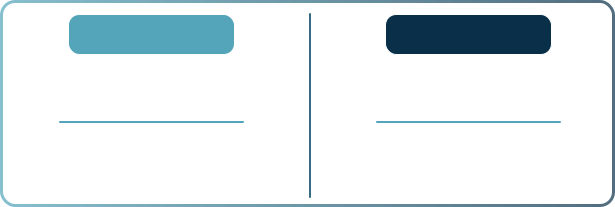

Filtro
A funcionalidade de filtro de horários oferece
duas janelas de análise de dados:
•12h - 23h59
•00h - 11h59
Com essa ferramenta, é possível
ampliar ou direcionar o intervalo temporal
exibido no gráfico, permitindo uma análise
mais precisa do comportamento da CPU ao longo
de diferentes períodos do dia.
A legenda dos dias é composta
por dois blocos de cores que facilitam a interpretação
rápida do gráfico. O bloco "azul claro - esquerdo" indica o dia e a
porcentagem de menor uso da CPU, enquanto o bloco "azul
escuro - direito" aponta o dia e a porcentagem de maior uso da CPU.
Essa legenda é dinâmica e interage com o filtro de horários.
Ao alterar o intervalo de horário, os dias e porcentagens
apresentados na legenda são automaticamente atualizados,
refletindo os menores e maiores usos dentro do novo intervalo
selecionado.
A legenda de cores apresenta
uma escala representativa do uso da CPU,
com intervalos claros para facilitar a interpretação:
•0% a 20%: Indica o menor uso da CPU.
•21% a 40%: Representa um uso moderado.
•41% a 60%: Uso elevado, porém ainda dentro de um nível aceitável.
•61% a 80%: Alerta de atenção; é importante monitorar para evitar aumentos maiores.
•81% a 100%: Uso crítico, com alto risco de travamentos ou falhas nos servidores.
Essa escala está diretamente vinculada ao
gráfico e ao comportamento dos blocos,
que variam de tons mais claros para uso
baixo a tons mais escuros para uso crítico.
O gráfico central da dashboard
é estruturado para fornecer uma visão clara
e detalhada do uso da CPU.
Eixo X: Representa os horários do dia e é
ajustável pelo filtro de horários, abrangendo duas
janelas temporais:
•12h - 23h59
•00h - 11h59
Eixo Y: Exibe os dias da semana, de domingo a sábado.
A métrica utilizada para preencher o gráfico
é baseada na média do uso total da CPU nos
seus servidores de Mobile Banking. Por exemplo, em um
cenário com 10 servidores sendo monitorados,
o gráfico refletirá os horários e dias em que
ao menos 30% dos seus servidores começam a apresentar
uso elevado de CPU. Isso facilita a identificação
de picos e padrões de comportamento ao longo do tempo.
O gráfico é desenhado no formato de um mapa
de calor. Os blocos escuros indicam maior uso
da CPU em horários e dias específicos, conforme
definido pela legenda de cores, enquanto os blocos
claros mostram os períodos de menor utilização.
É importante observar que o uso da CPU entra em
estado de alerta no intervalo de 70% a 85%
demandando assim uma maior atenção para evitar
sobrecargas e se tornando crítico a partir de
85%, havendo possibilidade de travamentos / lentidão e até
mesmo queda em seus servidores